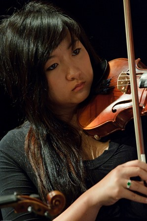

Over a two-year period in the late nineties, Townsville musicians, arts workers and a group of people who had a love for music realised the potential for developing a community-based Orchestra — one that would flourish and become an integral part of the City’s cultural life.
In 2000 to ‘test’ the viability of establishing an Orchestra a weekend workshop was arranged and musicians were invited to participate under the baton of Richard McIntyre, Senior Lecturer at the Canberra School of Music and the result — the Barrier Reef Orchestra was born.
In a typical year the Barrier Reef Orchestra, under the auspices of North Queensland Ensembles Inc, performs three times generally with a guest conductor and occasionally with other performing groups. Smaller ensembles, all utilising players from the Orchestra, regularly give concerts — Orpheus Strings, Pandanus Winds, Kingfisher Trio, Centenary Concert Band and the Barrier Reef Chamber Orchestra.
During the next few years the Orchestra performed with the comedy-duo Scared Weird Little Guys in Score, Townsville City Council’s Last Night of the Proms and A Christmas Carol.
In 2000 to ‘test’ the viability of establishing an Orchestra a weekend workshop was arranged and musicians were invited to participate under the baton of Richard McIntyre, Senior Lecturer at the Canberra School of Music and the result — the Barrier Reef Orchestra was born.
In a typical year the Barrier Reef Orchestra, under the auspices of North Queensland Ensembles Inc, performs three times generally with a guest conductor and occasionally with other performing groups. Smaller ensembles, all utilising players from the Orchestra, regularly give concerts — Orpheus Strings, Pandanus Winds, Kingfisher Trio, Centenary Concert Band and the Barrier Reef Chamber Orchestra.
During the next few years the Orchestra performed with the comedy-duo Scared Weird Little Guys in Score, Townsville City Council’s Last Night of the Proms and A Christmas Carol.
History
